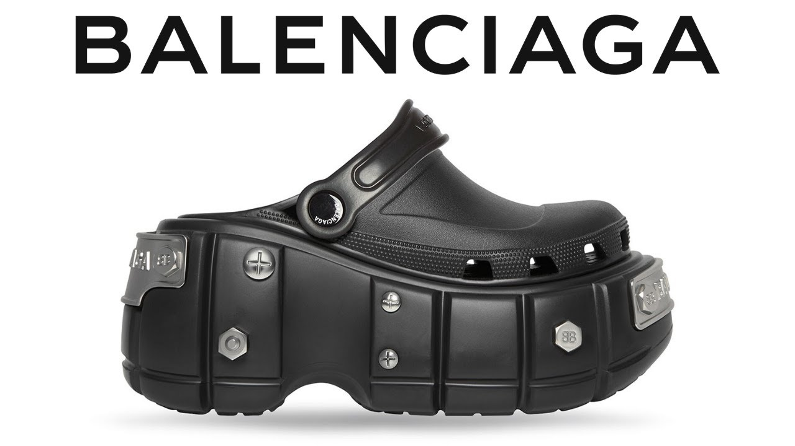
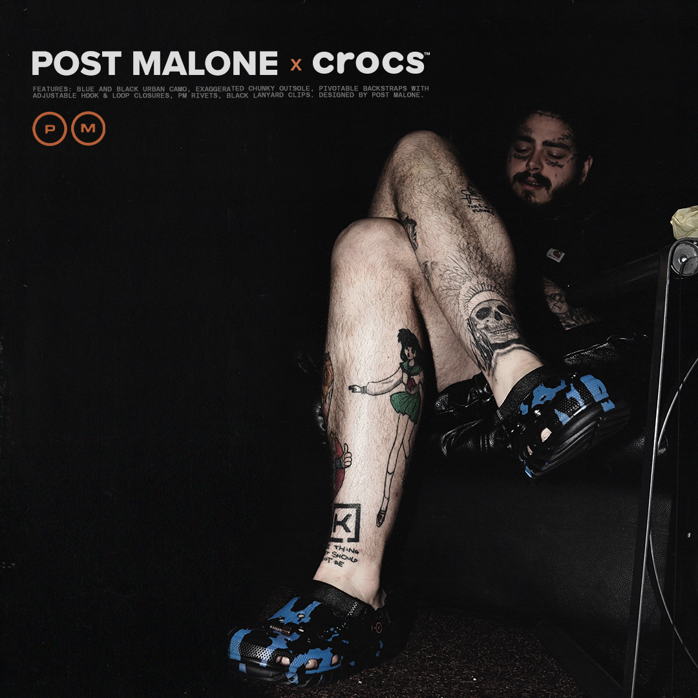

FASHION
Collaborations
Balenciaga: In 2017, the luxury fashion brand Balenciaga collaborated with Crocs to create a platform-style version of the Classic Clog, featuring a 10cm high platform. This unique collaboration attracted a lot of attention and mixed reactions in the fashion world.
Post Malone: The American rapper and singer Post Malone collaborated with Crocs on a series of limited-edition designs. His collaborations featured unique colorways and even included Jibbitz (charms) that were inspired by some of his tattoos.
KFC x Crocs: Fast-food chain KFC collaborated with Crocs to create a limited-edition shoe inspired by their famous fried chicken. The shoe even had a fried chicken scent.
Individuals Who Have Worn Crocs
Mario Batali: The renowned chef was known for wearing orange Crocs as his signature footwear.
Justin Bieber: The Canadian singer has been spotted wearing Crocs and has also been involved in the promotion of the brand.
Ariana Grande: The pop star has been seen wearing Crocs and even had a custom pair designed with her signature cloud motif.
Various Athletes: Some athletes have been seen wearing Crocs, particularly in more casual settings. For example, athletes like Serena Williams and NFL players have been photographed wearing Crocs.
Reasons that becoming popular among youth
Comfort and Versatility: Crocs are known for their comfort and versatility, making them ideal for everyday wear.
Colorful and Fun Designs: Youth appreciate Crocs' vibrant and playful styles, allowing for self-expression.
Casual Aesthetic: Their casual look fits well with the relaxed fashion preferences of many young people.
Celebrity Endorsements: Collaborations with celebrities and brands have boosted Crocs' popularity.
Social Media Influence: Social media and influencer culture have played a significant role in making Crocs a trend among the youth.
Customization: Personalization with Jibbitz charms adds an element of uniqueness to Crocs.
Sustainability Efforts: Crocs' sustainability initiatives resonate with environmentally conscious youth.

